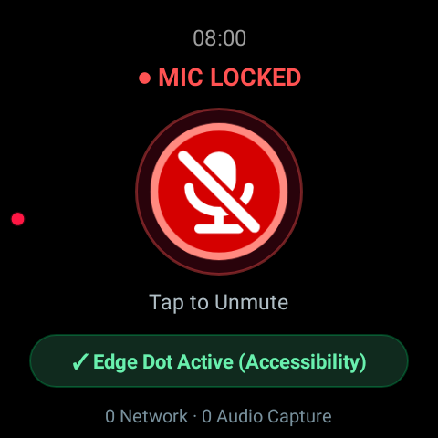
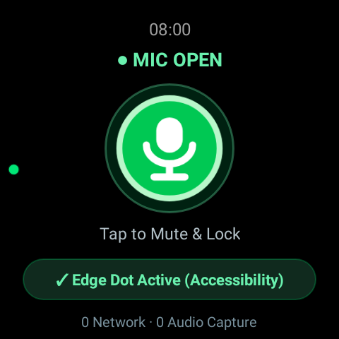

A Physical-Feel Microphone Kill Switch for Your Smartwatch.
MuteDot: Watch Mic Blocker (app.mutedot.wear) locks your Wear OS
smartwatch microphone OFF at the hardware audio layer, blocks silent background unmute attempts,
and displays an unmistakable Red / Green status dot on the edge of any watch face.

Red Dot · Mic Locked
Green Dot · Mic OpenHardware Mute & Anti-Hijack Lock
Controls AudioManager.setMicrophoneMute directly and monitors audio recording callbacks to re-lock instantly if a background app attempts to unmute.
Zero-ADB Bezel Status Dot
Optional TYPE_ACCESSIBILITY_OVERLAY indicator at 9, 12, 3, or 6 o'clock with built-in OLED burn-in pixel shifting and sleep auto-hide.
4 Instant Ways to Toggle
Toggle from the main app, Watch Face Complication, Wear OS Swipe Tile, Quick Settings shade, or double-press hardware button shortcut.
Mathematically Air-Gapped
INTERNET, ACCESS_NETWORK_STATE, and RECORD_AUDIO permissions are completely stripped from the APK. Supports 85 global watch locales.